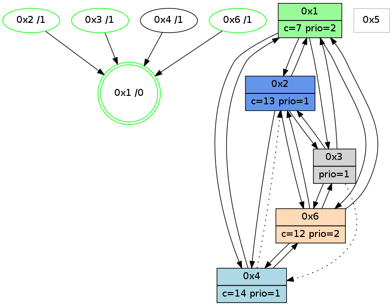

>> << IDX [start] -100 -25 -5 +0 +5 +25 +100 [995.192391157]
 Previous packets
----------------------------------------------------------------------
990.271310 beacon01(adaf) #0 coord=01,02,05,03,04,06 cycle=432.0ms assoc
-- color-indic=1 64 69 73
990.281271 beacon02(adaf) #0 coord=01,02,05,03,04,06 cycle=432.0ms assoc 64 38 8c
990.291273 beacon05(adaf) #0 coord=01,02,05,03,04,06 cycle=432.0ms assoc 64 9e a6
990.301272 beacon03(adaf) #0 coord=01,02,05,03,04,06 cycle=432.0ms assoc 64 02 82
990.311273 beacon04(adaf) #0 coord=01,02,05,03,04,06 cycle=432.0ms assoc 64 a4 a8
990.321273 beacon06(adaf) #0 coord=01,02,05,03,04,06 cycle=432.0ms assoc 64 d0 b4
990.333415 [Hello(1): seq=696 sym=2,6,3 sysInfo=hasWarning,coloring-mode-on,ColoringModeRequestCalled stat=2:7,7,4,3/6:6,15,11,2/3:4,0,3,0]
990.337696 [Color(2) seq=183 @0:0 color=13 prio=1 c=7,c,e;1,4,6,8,9,b]
990.339748 [Hello(6): seq=709 sym=2,1,3 sysInfo=hasWarning stat=2:8,4,2,2/1:0,9,5,1/3:7,3,12,5]
990.342794 [Color(6) seq=181 @0:0 color=12 prio=2 c=7,d,e;1,4,6,8,9,b]
----------------------------------------------------------------------
990.763418 beacon01(adaf) #0 coord=01,02,05,03,04,06 cycle=432.0ms assoc
-- color-indic=1 64 ad 1c
990.773378 beacon02(adaf) #0 coord=01,02,05,03,04,06 cycle=432.0ms assoc 64 fc e3
990.783379 beacon05(adaf) #0 coord=01,02,05,03,04,06 cycle=432.0ms assoc 64 5a c9
990.793379 beacon03(adaf) #0 coord=01,02,05,03,04,06 cycle=432.0ms assoc 64 c6 ed
990.803379 beacon04(adaf) #0 coord=01,02,05,03,04,06 cycle=432.0ms assoc 64 60 c7
990.813380 beacon06(adaf) #0 coord=01,02,05,03,04,06 cycle=432.0ms assoc 64 14 db
990.825070 [Hello(4): seq=797 sym=2,1,6 sysInfo=hasWarning stat=2:0,12,10,1/1:2,3,8,0/6:14,15,10,3]
990.828769 [Hello(2): seq=1285 sym=3,6,1 sysInfo=hasWarning stat=3:11,11,8,3/6:9,13,8,1/1:4,1,15,0]
990.837155 [STC(1) #0.143 new-neigh,tree-change,inconsistent-stability,stable,to-color d=0]
990.841014 [Color(1) seq=223 @0:0 color=7 prio=2 c=1,4,6,8,9,b,c,d;0,2,3,5,a,e]
----------------------------------------------------------------------
991.255525 beacon01(adaf) #0 coord=01,02,05,03,04,06 cycle=432.0ms assoc
-- color-indic=1 64 e1 ac
991.265489 beacon02(adaf) #0 coord=01,02,05,03,04,06 cycle=432.0ms assoc 64 b0 53
991.275486 beacon05(adaf) #0 coord=01,02,05,03,04,06 cycle=432.0ms assoc 64 16 79
991.285487 beacon03(adaf) #0 coord=01,02,05,03,04,06 cycle=432.0ms assoc 64 8a 5d
991.295486 beacon04(adaf) #0 coord=01,02,05,03,04,06 cycle=432.0ms assoc 64 2c 77
991.305488 beacon06(adaf) #0 coord=01,02,05,03,04,06 cycle=432.0ms assoc 64 58 6b
991.317037 [STC(4)->1 #0.143 new-neigh,tree-change,inconsistent-stability,to-color d=1]
991.319130 [STC(2)->1 #0.143 new-neigh,tree-change,inconsistent-stability,stable,to-color d=1]
991.321728 [Color(2) seq=184 @0:0 color=13 prio=1 c=7,c,e;1,4,6,8,9,b]
991.323893 [STC(6)->1 #0.143 new-neigh,tree-change,inconsistent-stability,stable,to-color d=1]
991.326506 [Color(6) seq=182 @0:0 color=12 prio=2 c=7,d,e;1,4,6,8,9,b]
991.330535 [Hello(1): seq=697 sym=2,4,6,3 sysInfo=hasWarning,coloring-mode-on,ColoringModeRequestCalled stat=2:7,7,4,3/4:0,0,0,0/6:7,0,11,2/3:4,0,3,0]
----------------------------------------------------------------------
991.747635 beacon01(adaf) #0 coord=01,02,05,03,04,06 cycle=432.0ms assoc
-- color-indic=1 64 25 c3
991.757595 beacon02(adaf) #0 coord=01,02,05,03,04,06 cycle=432.0ms assoc 64 74 3c
991.767595 beacon05(adaf) #0 coord=01,02,05,03,04,06 cycle=432.0ms assoc 64 d2 16
991.777596 beacon03(adaf) #0 coord=01,02,05,03,04,06 cycle=432.0ms assoc 64 4e 32
991.787597 beacon04(adaf) #0 coord=01,02,05,03,04,06 cycle=432.0ms assoc 64 e8 18
991.797599 beacon06(adaf) #0 coord=01,02,05,03,04,06 cycle=432.0ms assoc 64 9c 04
991.813002 [Hello(4): seq=798 sym=1,6 asym=2 sysInfo=hasWarning stat=1:3,4,9,0/6:14,0,11,3/2:1,12,11,1]
----------------------------------------------------------------------
992.239742 beacon01(adaf) #0 coord=01,02,05,03,04,06 cycle=432.0ms assoc
-- color-indic=1 64 68 c4
992.249703 beacon02(adaf) #0 coord=01,02,05,03,04,06 cycle=432.0ms assoc 64 39 3b
992.259703 beacon05(adaf) #0 coord=01,02,05,03,04,06 cycle=432.0ms assoc 64 9f 11
992.269704 beacon03(adaf) #0 coord=01,02,05,03,04,06 cycle=432.0ms assoc 64 03 35
992.279705 beacon04(adaf) #0 coord=01,02,05,03,04,06 cycle=432.0ms assoc 64 a5 1f
992.289705 beacon06(adaf) #0 coord=01,02,05,03,04,06 cycle=432.0ms assoc 64 d1 03
992.301834 [Hello(1): seq=698 sym=2,4,6,3 sysInfo=hasWarning,coloring-mode-on,ColoringModeRequestCalled stat=2:7,7,4,3/4:0,0,0,0/6:7,0,11,2/3:4,0,3,0]
992.306103 [Color(2) seq=185 @0:0 color=13 prio=1 c=7,c,e;1,4,6,8,9,b]
992.308167 [Hello(6): seq=711 sym=2,1,3 sysInfo=hasWarning stat=2:9,4,2,2/1:1,11,6,1/3:9,3,13,5]
992.311201 [Color(6) seq=183 @0:0 color=12 prio=2 c=7,d,e;1,4,6,8,9,b]
----------------------------------------------------------------------
992.731851 beacon01(adaf) #0 coord=01,02,05,03,04,06 cycle=432.0ms assoc
-- color-indic=1 64 ac ab
992.741812 beacon02(adaf) #0 coord=01,02,05,03,04,06 cycle=432.0ms assoc 64 fd 54
992.751811 beacon05(adaf) #0 coord=01,02,05,03,04,06 cycle=432.0ms assoc 64 5b 7e
992.761812 beacon03(adaf) #0 coord=01,02,05,03,04,06 cycle=432.0ms assoc 64 c7 5a
992.771813 beacon04(adaf) #0 coord=01,02,05,03,04,06 cycle=432.0ms assoc 64 61 70
992.781813 beacon06(adaf) #0 coord=01,02,05,03,04,06 cycle=432.0ms assoc 64 15 6c
992.796053 [Color(1) seq=225 @0:0 color=7 prio=2 c=1,4,6,8,9,b,c,d;0,2,3,5,a,e]
992.798961 [Hello(4): seq=799 sym=1 asym=2,6 sysInfo=hasWarning stat=1:4,4,9,0/2:1,12,11,1/6:15,1,11,3]
----------------------------------------------------------------------
993.223958 beacon01(adaf) #0 coord=01,02,05,03,04,06 cycle=432.0ms assoc
-- color-indic=1 64 e0 1b
993.233920 beacon02(adaf) #0 coord=01,02,05,03,04,06 cycle=432.0ms assoc 64 b1 e4
993.243920 beacon05(adaf) #0 coord=01,02,05,03,04,06 cycle=432.0ms assoc 64 17 ce
993.253921 beacon03(adaf) #0 coord=01,02,05,03,04,06 cycle=432.0ms assoc 64 8b ea
993.263921 beacon04(adaf) #0 coord=01,02,05,03,04,06 cycle=432.0ms assoc 64 2d c0
993.273920 beacon06(adaf) #0 coord=01,02,05,03,04,06 cycle=432.0ms assoc 64 59 dc
993.286044 [Hello(1): seq=699 sym=2,4,6,3 sysInfo=hasWarning,coloring-mode-on,ColoringModeRequestCalled stat=2:7,7,4,3/4:1,0,0,0/6:8,1,11,2/3:4,0,3,0]
993.289811 [STC(1) #0.144 new-neigh,tree-change,inconsistent-stability,stable,to-color d=0]
993.292041 [Color(2) seq=186 @0:0 color=13 prio=1 c=7,c,e;1,4,6,8,9,b]
993.296075 [Hello(6): seq=712 sym=4,2,1,3 sysInfo=hasWarning stat=4:0,0,0,0/2:9,4,2,2/1:1,12,6,1/3:10,3,13,5]
993.298914 [Color(6) seq=184 @0:0 color=12 prio=2 c=7,d,e;1,4,6,8,9,b]
----------------------------------------------------------------------
993.716066 beacon01(adaf) #0 coord=01,02,05,03,04,06 cycle=432.0ms assoc
-- color-indic=1 64 24 74
993.726026 beacon02(adaf) #0 coord=01,02,05,03,04,06 cycle=432.0ms assoc 64 75 8b
993.736027 beacon05(adaf) #0 coord=01,02,05,03,04,06 cycle=432.0ms assoc 64 d3 a1
993.746028 beacon03(adaf) #0 coord=01,02,05,03,04,06 cycle=432.0ms assoc 64 4f 85
993.756027 beacon04(adaf) #0 coord=01,02,05,03,04,06 cycle=432.0ms assoc 64 e9 af
993.766028 beacon06(adaf) #0 coord=01,02,05,03,04,06 cycle=432.0ms assoc 64 9d b3
993.777781 [Hello(2): seq=1288 sym=3,6,1,4 sysInfo=hasWarning stat=3:11,11,9,3/6:10,0,9,1/1:5,4,0,0/4:0,0,0,0]
993.779936 [Color(1) seq=226 @0:0 color=7 prio=2 c=1,4,6,8,9,b,c,d;0,2,3,5,a,e]
993.781609 [Hello(4): seq=800 sym=1 asym=2,6 sysInfo=hasWarning stat=1:5,4,10,0/2:1,12,11,1/6:15,2,11,3]
993.783694 [Hello(3): seq=798 sym=6,1,2 asym=4 sysInfo=hasWarning stat=6:6,9,5,2/1:15,10,5,1/2:15,6,11,1/4:0,0,0,0]
993.786909 [STC(3)->1 #0.144 new-neigh,tree-change,inconsistent-stability,stable,to-color d=1]
993.788980 [STC(4)->1 #0.144 new-neigh,tree-change,inconsistent-stability,to-color d=1]
993.792532 [TreeStatus(3)-.->1 #0.144 new-neigh,tree-change,inconsistent-stability,stable child=1]
----------------------------------------------------------------------
994.208175 beacon01(adaf) #0 coord=01,02,05,03,04,06 cycle=432.0ms assoc
-- color-indic=1 64 aa 61
994.218138 beacon02(adaf) #0 coord=01,02,05,03,04,06 cycle=432.0ms assoc 64 fb 9e
994.228136 beacon05(adaf) #0 coord=01,02,05,03,04,06 cycle=432.0ms assoc 64 5d b4
994.238136 beacon03(adaf) #0 coord=01,02,05,03,04,06 cycle=432.0ms assoc 64 c1 90
994.248137 beacon04(adaf) #0 coord=01,02,05,03,04,06 cycle=432.0ms assoc 64 67 ba
994.258137 beacon06(adaf) #0 coord=01,02,05,03,04,06 cycle=432.0ms assoc 64 13 a6
994.270607 [Hello(1): seq=700 sym=2,4,6,3 sysInfo=hasWarning,coloring-mode-on,ColoringModeRequestCalled stat=2:7,7,4,3/4:2,0,1,0/6:8,2,11,2/3:5,0,4,1]
994.274545 [Color(2) seq=187 @0:0 color=13 prio=1 c=7,c,e;1,4,6,8,9,b]
994.276614 [Hello(6): seq=713 sym=4,2,1,3 sysInfo=hasWarning stat=4:1,0,1,0/2:10,4,2,2/1:1,13,6,1/3:11,3,14,6]
994.279741 [Color(6) seq=185 @0:0 color=12 prio=2 c=7,d,e;1,4,6,8,9,b]
----------------------------------------------------------------------
994.700284 beacon01(adaf) #0 coord=01,02,05,03,04,06 cycle=432.0ms assoc
-- color-indic=1 64 6e 0e
994.710245 beacon02(adaf) #0 coord=01,02,05,03,04,06 cycle=432.0ms assoc 64 3f f1
994.720245 beacon05(adaf) #0 coord=01,02,05,03,04,06 cycle=432.0ms assoc 64 99 db
994.730246 beacon03(adaf) #0 coord=01,02,05,03,04,06 cycle=432.0ms assoc 64 05 ff
994.740245 beacon04(adaf) #0 coord=01,02,05,03,04,06 cycle=432.0ms assoc 64 a3 d5
994.750247 beacon06(adaf) #0 coord=01,02,05,03,04,06 cycle=432.0ms assoc 64 d7 c9
994.761959 [Hello(4): seq=801 sym=1,6 asym=2 sysInfo=hasWarning stat=1:5,4,10,0/6:0,3,11,3/2:1,12,11,1]
994.763950 [Color(1) seq=227 @0:0 color=7 prio=2 c=1,4,6,8,9,b,c,d;0,2,3,5,a,e]
994.765685 [Hello(3): seq=799 sym=6,1,2 asym=4 sysInfo=hasWarning stat=6:7,10,5,2/1:15,10,5,1/2:15,6,11,1/4:0,0,0,0]